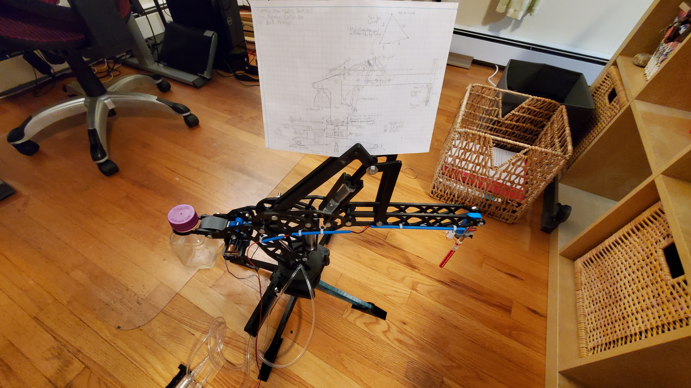

Engineering related projects in school, including for Principles of Engineering, Robotics, and designs for school activities.

'22
Diffy Swerve
Diffy Swerve
An experimental swerve drive for robotics during 11th grade.
This was a proposal to manufacture an in-house drive system for the FRC season.
After getting into robotics at Ward Melville, I was talking to a friend from my old school, Gunn High, about the FIRST Robotics Competition and various technical aspects of robotics. We were discussing drive systems, and the topic of swerve drive came up. Swerve drive is a type of drive system where each wheel can be individually steered and is the drive most high level teams use. The Gunn Robotics Team is well known for designing and manufacturing their own swerve drives, and I wanted to try that out with the Ward Melville team. However, most of the team believed that it would be too hard to do since we lacked experience and funds. I needed to prove that designing a drive system would be feasible first. I decided to look into differential swerve as my pick for the drive system for a few reasons. They use both motors to steer and drive instead of one for each, and they had a lower part count meaning it would be easier to manufacture. Using fusion 360, I was able to design a few 3D printable prototypes. I still started off with a traditional swerve drive, before trying to design anything experimental.

After getting my bearings, I began work on a differential swerve design. The design is based around a VEX robotics wheel mounted on a steel axle with 3D printed gears driving it. A 3D printed case holds the entire system together and acts as a mounting point for motors and electronics.

Once assembled, the swerve drive worked exactly as designed, demonstrating both forwards movement and steering. The next step from here would be to design a finalized design to be machined, and used on the actual robot.
'22
Hydraulic Arm
Hydraulic Arm
A hydraulic arm, designed to be almost fully 3D Printed and as strong as possible. The final project of my Principles of Engineering class in 10th grade.

At the beginning of the 4th quarter of my sophomore year, We were given a budget, and tasked to create a hydraulic arm to compete against other teams. The intent was for teams to use funds to buy wood and other materials from the teacher to use for their creation. I could not help but notice, that there was no cost on 3D printing, which is why I decided to print the entire project.
The arm itself uses multiple techniques I learned from previous projects, the planetary gears from the gearbox project, low friction guide rails from the microscope plate, and integrated usage of hardware. I also got to learn several new techniques, including generative design using inventor, a workflow between different software, and compliant mechanisms. The teacher also required me to submit professional drawings which I learned to produce using Fusion. My partner was in charge of all the electronics for the electromagnet mounted at the end of the arm, and I helped out with the batteries and electronics mounts.

After the end of the project, I took the arm home to display. I took some pictures of it functioning, and then stripped it of most active hydraulic components. Currently, it is holding up a Lego Saturn V moon rocket. Minor upgrades have been made to improve strength and durability for this purpose.

'22
Drinkinator
Drinkinator
A device that let me drink water from water bottle refillers. Designed to be lightweight and convinient to use.
For covid reasons, the school turned off all the water fountains. However, even after the majority of the threat has passed, they still have not turned them back on. I had two options, either carry a water bottle or buy overpriced bottled water from the school. With my small bag, I could not fit a water bottle and I really did not want to buy water, so I decided to solve the problem with engineering. The school turned off all the regular water fountains, but left all the water bottle refills on. If I could somehow catch the water, I could then drink it. Towards the end of my sophomore year, I made the first version of my solution. It was a cone shaped cup with a hole for a straw at the bottom. It worked well for letting me drink from the fountains, but had several flaws that made it impractical. It was hard to carry in my small bag and it would overflow everytime I took a drink for more than 2 seconds.

During my junior year, I decided to improve on the design; especially since I had clubs almost every day of the week and needed to stay hydrated. So, I redesigned my invention to be a flat shape, and made a special channel for excess water to drain out of. I also added a ergonomic grip, made it fully 3D printable without supports, and addeds a compliant lid.

'22
ID Card Holder
ID Card Holder
A clip that holds my id card on my bag. Designed using principles from compliant mechanisms.
Halfway through the year, the school decided to make wearing ID cards mandatory. The school provided lanyards, but I was not keen to add more straps around my neck. Instead, I wanted to attach my ID to the strap of my messenger bag. To do this, I made a custom clamp using a compliant hinge, then a keychain ring attaches the ID card.
'21
Marble Slide Project
Marble Slide Project
A marble machine with a trebuchet and counting ability. The second project for my Principles of Engineering class in 10th grade.
The goal was to create a marble machine this time, mostly utilizing cheap materials like cardboard and toothpicks. Each person had to create their own marble lifting system and the rest was done as a team. We were given much more freedom this project, so we started off with the most ambitious ideas. Our first idea was to use the Lorentz force to push the steel marbles up, or in other words, a railgun. We vastly underestimated the power demands of a system like this and it went, literally, nowhere. My second idea was ambitious, but just in the realm of possibility. keeping with the theme of ballistics, I designed a trebuchet. The mechanism uses a large rubber band on a 3D printed frame to provide the force to throw the marble and used a snail cam to reload the trebuchet. The device was surprisingly consistent, and could hit the same spot many times in a row.

The most difficult part of the project was loading one marble at a time into the system. My solution was a seesaw which is pushed down by the trebuchet arm and lifts a marble out of the queue, but is balanced in such a way that marbles would not be pushed forward by other marbles. After the catapult, we were supposed to have a module for the marbles to go down. I got inspiration from mechanical calculators, and decided to add a binary marble counter I designed using a series of switches. They then go up a conveyor belt my partner designed and then back down to the queue for the catapult to complete the circuit.
'21
Gearbox
Gearbox
A 3D printed hoist designed to lift over 100 pounds. The first project for my Principles of Engineering class in 10th grade.

The goal was to make the smallest hoist that could lift the most amount of weight in teams of 2. I started this project with researching gearboxes and thinking about 3D printing them. My first idea was a set of planetary gears, which I quickly 3D printed.

These were too large to be useful, but they succesfully proved that a high ratio 3D printed gearbox was viable. For the final version, I designed a standard gear chain, stacked on two shafts to conserve space.

To make this design, I used, steel shafts, laser-cut wooden sides, and 3d printed gears. The completed hoist uses 8 gears to achieve a total reduction of 2048:1. The hoist was powered by a small brushless motor and used 550 cord to lift objects, which was my partner's side of the project. In testing, this design successfully lifted 100 pounds, which is impressive considering most of the gears and spool were 3D printed from PLA.